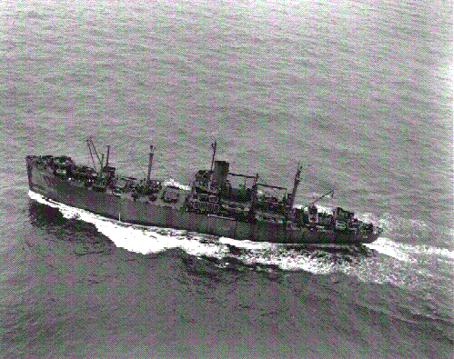

April 12, 1944:

HQ Landing Team One, 1st Battalion, 23rd Marines, 4th Marine Division, FMF, embarked at Kahalui, Maui, TH on the USS Livingston. AK222, sailing therefrom 13 April 1944, for 4 days of amphibious exercises. On 18 April we disembarked in vicinity of Maui Amphibious Training Center, Maui.
NOTE: During these exercises, 1st Platoon C-1-23, participated in rubber boat landings at night. To my recollection, this was the only experience I had in landing from a rubber craft. Our weapons were secured in the bottom of the rubber boat until we were on shore, at which time the weapons were unsecured and each Marine grabbed a rifle expecting to retrieve his own weapon. Unfortunately, in the dark one weapon looked like each other and they got mixed up.
The objective was for us to cross the rather narrow beach and climb the bluff behind the beach. In the dark the bluff took on the appearance of a cliff. Without the aid of ropes or any climbing apparatus we used whatever roots, vines, thorn bushes, rocks or whatever was before us to reach the top. In the dark we had no idea how high we had to go or how far we might fall should we lose our grip. It was an awesome experience in the dark but our fears seemed to have been overreaction when we saw the bluff during the daylight.
However, my BAR had been left behind on the beach during the dark while I carried off someone else's weapon. In the morning light I recognized I had the wrong weapon and on checking with others, found the owner of the rifle I had in my possession but mine could not be located. Returning to the beach I found my BAR near our landing site in the sand showing signs it had been run over by a tank that had landed nearby during the night. (The tanks could not have climbed the bluff as we had but had proceeded along the shoreline to a ravine through which they had gotten off the beach ). My rifle wore the gouges it received that night throughout the time it was my best friend.

Company C-l-23 4th Marine Division boarded the USS Callaway PA 35 on the 7th and sailed on the 8th, participating in amphibious training along the coast of Maui until 15 May. On 18 May we reboarded the Callaway and joined the Task Force convoy steaming toward Saipan, Marianas Isls where we arrived early in the morning of 15 June. The landing crafts that would take us from the Callaway to the beaches of Saipan were transported in another ship, necessitating that we transfer from the Callaway to that ship for our ride to the island. The name of that ship and its designation escapes me, if indeed I ever heard it. My service record does not identify that ship. I recall our last hot meal before the landing on Saipan was while on board this ship (without a name) and a very good breakfast it was with a steak and peach preserves. (Like condemned prisoners, our last meal was wonderful)
Following breakfast we were directed into the compartment in which it appeared to be a garage for dozens of amphibian tractors. We made our way over the tops of the amptracs until we arrived at our designated vehicle. Shortly thereafter the engines were started and the noise was horrendous but worse yet were the fumes from their engines, which burned the eyes, nose and throats. The smell was terrible and surely could be life threatening if one had to remain there for any length of time. Large exhaust fans were provided to expel the engine exhaust but were wholly inefficent for the job. We yearned to get out of that floating garage as quickly as possible and welcomed the open air when our turn came to cast off from this mother ship. Unfortunately our elation faded quickly for ahead could be seen the Island of Saipan with smoke plumes and clouds most everywhere, evidence that our warships and planes had been battering enemy positions before we arrived.
Written by Orvel Johnson
Maintained on web site by Rowland Lewis
Last
Modified 12/19/2002